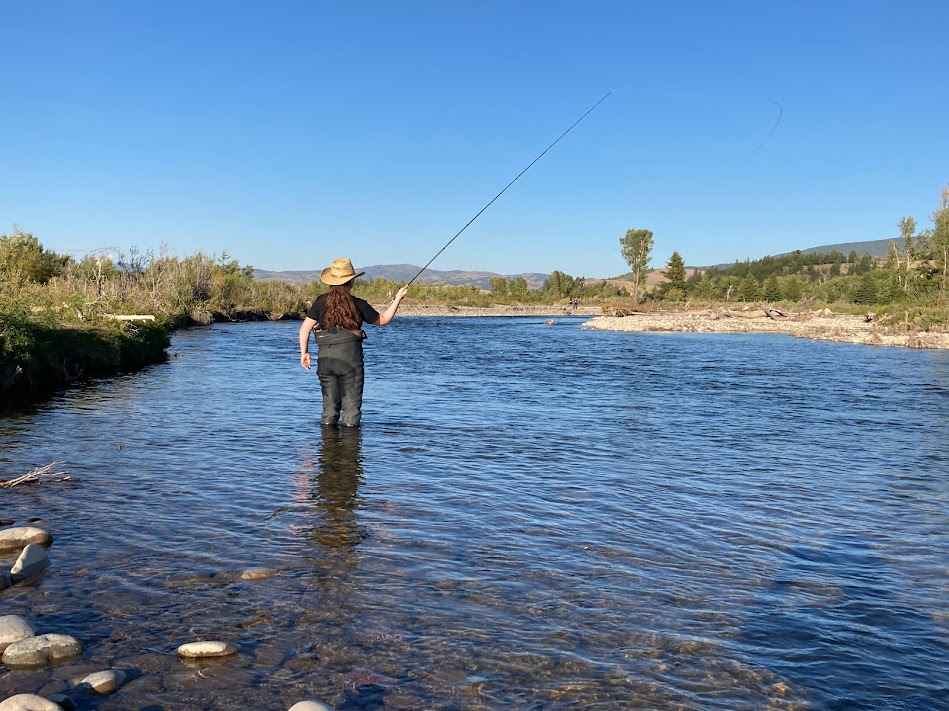
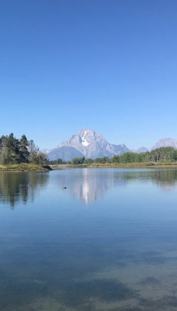
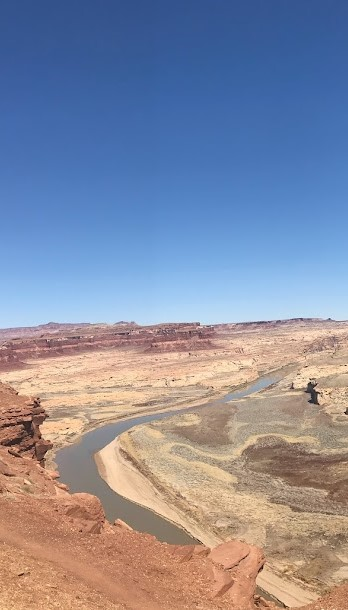

Rapids are all about rivers! However, you don't always have to be in the thick of it to enjoy their magnificence. Rivers can be found all over the world and tend to be the highlight of any water rafting trip.

Rivers come in many shapes, sizes, and types. For example, some rivers are covered with green foliage. Others might be surrounded by sagebrush, mountains, and trees. Others are found in the desert. With nothing but sand, rocks, and an occasional plant. No matter what your favorite is, you can always find the best rivers to raft, and visit!
